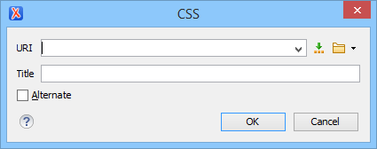

Customizing Author Mode Using CSS Files Associated with a Framework
The easiest way to customize the main CSS stylesheet of a framework is to create a new stylesheet, save it as an alternate CSS file that will be applied as an additional layer to the main CSS, and then select it from the Styles drop-down menu in Author mode.
For example, suppose that you want to customize the main CSS for DITA documents. To do this, follow these steps:
- First, create a new CSS stylesheet and save it in the /frameworks/dita/css/edit folder (where the default main stylesheet named style-basic.css is located).
-
Edit the DITA framework and go to the CSS
subtab:
- Open the Preferences dialog box and go to Document Type Association.
- Select the DITA document type and click the Edit button.
Tip: If you do not have write permissions to modify the document type, use the Extend button to create an extension of the framework.- Go to the CSS subtab of the Author tab.
Figure 1. CSS Subtab of the Document Type Association Author Tab 
-
Add the new stylesheet as an alternate CSS stylesheet:
-
Click the
 Add button to open a dialog box that allows you to specify the URI and
Title for your newly created stylesheet.
Add button to open a dialog box that allows you to specify the URI and
Title for your newly created stylesheet.
- Select the Alternate option to define it as an alternate stylesheet that will be applied as an additional layer to the main CSS.
Figure 2. Add CSS Dialog Box Note: If you want the extra added CSS to be used in addition to the existing CSSs, you need to leave the title empty and the Alternate checkbox unchecked. -
Click the
- Click OK in all the dialog boxes to validate the changes.
-
Select your newly created CSS stylesheet from the Styles
drop-down menu on the toolbar in Author mode.
You can now edit DITA documents based on the new CSS stylesheet. You can also edit the new CSS stylesheet itself and see its effects on rendering DITA documents in the Author mode by using the
 Reload action that is
available on the toolbar.
Reload action that is
available on the toolbar.